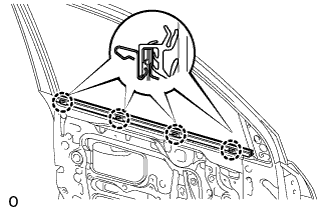
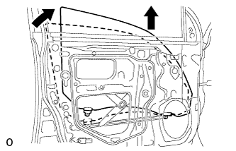
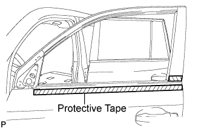

FRONT DOOR BELT MOULDING > REMOVAL |
| 1. DISCONNECT CABLE FROM NEGATIVE BATTERY TERMINAL |
| 2. REMOVE FRONT LOWER DOOR FRAME BRACKET GARNISH LH |
 |
Detach the clip and claw, remove the front lower door frame bracket garnish.
| 3. REMOVE FRONT DOOR INSIDE HANDLE BEZEL LH |
 |
Using a screwdriver, detach the 4 claws and remove the inside handle bezel.
| 4. REMOVE FRONT DOOR ARMREST BASE PANEL ASSEMBLY LH |
 |
Using a moulding remover, detach the 5 claws.
Disconnect the connector and remove the front door armrest base panel and multiplex network master switch.
| 5. REMOVE DOOR ASSIST GRIP COVER LH |
 |
Using a moulding remover, detach the 8 claws and remove the door assist grip cover.
| 6. REMOVE FRONT DOOR TRIM BOARD SUB-ASSEMBLY LH |
 |
Remove the 3 screws.
Remove the 13 clips, 4 claws and trim board.
Disconnect the connector.
 |
Disconnect the 2 cables from the inside handle.
| 7. REMOVE OUTER REAR VIEW MIRROR ASSEMBLY LH |
 |
Disconnect the connector labeled A.
Detach the clamp.
Remove the 3 nuts and claw.
Remove the outer rear view mirror.
| 8. REMOVE FRONT DOOR SERVICE HOLE COVER LH |
 |
Using a clip remover, detach the 9 clamps.
Remove the bolt and disconnect the 2 connectors.
Remove the service hole cover.
| 9. REMOVE FRONT INNER DOOR GLASS WEATHERSTRIP LH |
 |
Detach the 4 claws by pulling the weatherstrip upward to remove the weatherstrip.
| 10. REMOVE FRONT DOOR GLASS SUB-ASSEMBLY LH |
Driver Side:
Temporarily install the multiplex network master switch.
Passenger Side:
Temporarily install the power window regulator switch assembly.
Connect the cable to the negative (-) battery terminal.
Move the door glass until the bolts appear in the service holes.
Disconnect the cable from the negative (-) battery terminal.
 |
Remove the 2 bolts.
 |
Remove the door glass in the direction indicated by the arrows in the illustration.
Driver Side:
Remove the multiplex network master switch.
Passenger Side:
Remove the power window regulator switch assembly.
| 11. REMOVE FRONT DOOR GLASS RUN LH |
 |
Remove the front door glass run.
| 12. REMOVE FRONT DOOR BELT MOULDING ASSEMBLY LH |
 |
Put protective tape around the belt moulding.
 |
Detach the claw and remove the belt moulding.